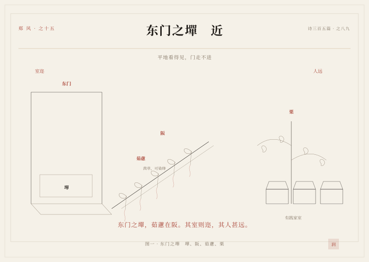
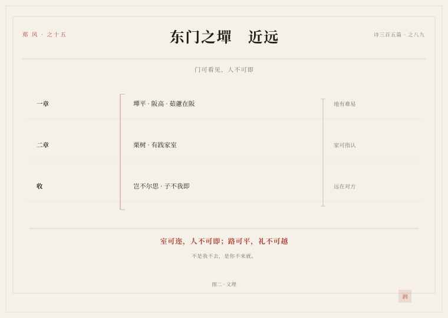

第八十九篇 东门之墠
郑风 · 之十五 SJ089
朗读 · 普通话
依经文原文朗读，章次不读出；配古琴底乐，不改速、不加拖腔。全库同一音色（豆包 TTS），非播音员录制。
一 解题
诗三判：
- 谁在说：一个站在东门外的女子。她看得见那人的家：平地、坡上茜草、成行的栗树与家室；看得见门，走不进去。
- 说什么事：两章。前章写“室迩人远”，后章写“岂不尔思，子不我即”。不是我不想，是你不来就。
- 为何编在此：郑风之十五。088 写“追过礼”，089
写“隔在门”。一个已上车，一个还在门外；一个迟，一个近而不得。
《毛序》：“《东门之墠》，刺乱也。男女有不待礼而相奔者也。”
朱子《诗集传》：“赋也。东门、城东门也。墠、除地町町者。茹藘、茅蒐也。一名茜。可以染绛。陂者、曰阪。门之旁有墠、墠外有阪。阪之上有草。识其所与淫者之居也。室迩人远者、思之而未得见之词也。”
本库的看法：《东门之墠》是一首把“近”写成“远”的诗。
第一章先把地理摆平：东门有除好的平地，坡上有茜草，两者都在眼前。地越平，人越远。
第二章把“远”归到一句话上：“岂不尔思？子不我即。”——我不是不思念，是你不来就我。全诗没有一句“我过去”，只有一句“你不来”。
这就是“近而不得”：门可看见，礼不可越过。
先辨五事：“墠”是除地，不是“坛”；“茹藘”是茜草，可染绛，不是“芦”；“阪”是坡，不是“坂”；“践”是行列，不是“践踏”；“即”是就、靠近，不是“立即”。
二 经文
第一章
东门之墠，茹藘在阪。
其室则迩，其人甚远。
第二章
东门之栗，有践家室。
岂不尔思？子不我即。
分章：二章，章四句。
三 韵读
- 一章：墠、阪、远，元部；三句一韵。
- 二章：栗、室、即，质部；三句一韵。
读法：前章元部，声音开阔，像平地；后章质部，声音短促，像门闩。由平到紧，由望到阻。
四 字义与名物
- 东门：城东门。墠：除地、扫平的空地；不是封土为坛。
- 茹藘：茅蒐、茜草；根可染绛。阪：坡、高阜。
- 迩：近。远：远；这里不是路程，是“不得见”。
- 栗：栗树；一说表道之树。有践：成行、排列整齐。
- 家室：房屋、人家。即：就、靠近；不是“立即”。
五 今译
东门外面有扫平的空地，茜草长在坡上。他的家离得这么近，人却离得那么远。
东门外面有栗树，树下是一排排人家。我岂不想你？是你不来就我。
六 章旨
- 一章：写“墠”与“阪”。平地易走，坡草难越；近与远先在眼里分成两层。
- 二章：写“栗”与“即”。家室成行，门可指认；“子不我即”把远归到对方。
- 总收：室可迩，人不可即；路可平，礼不可越。
她不是不肯走，是只肯等他来就。
七 诗教
- 兴：以“东门之墠、茹藘在阪”起兴。先写地，再写人；地越具体，人越空。
- 观：观“近”。近不只是路程，还有名分；门当户对，也可能一步不能进。
- 群：婚姻不是一个人走过去，是两家把门打开；“即”是男方来就，不是女方自去。
- 怨：诗里没有大哭，只有一句反问。怨不出口，才成“远”。
八 分寸与边界
- 不可把“墠”读成“坛”。墠是除地，坛是封土；一读成祭坛，东门就成了庙。
- 不可把“茹藘”读成“芦”。它是茜草，可染绛；一读成芦苇，阪就成了水边。
- 不可把“远”当路程。它写的是不得见；一量成里数，诗就成地图。
- 不可把“即”当“立即”。它是就、靠近；一读成时间，动作就没了。
- 不可把“子不我即”读成“我不去”。原句把不动归给对方；一倒过来，诗就成了女子自守。
九 存疑
- 诗旨：毛序“刺乱，不待礼而相奔”；朱子“识所与淫者之居，思而未得见”。一刺一思；本库两存，以“近而不得”读。
- “墠/坛”：毛传作“坛”，郑笺作“墠”；字异义近，本库从“除地”。
- “有践”：毛传“浅也”，朱子“行列貌”；从“行列”，才见家室成排。
- “栗”：表道之栗；一说“栗”为“战栗”。从表道树，才与“家室”相连。
- 作者与年代：序不言作者；郑笺以为“时乱，不得待礼”。无确证。
十 跨典
- 《礼记·坊记》：“故男女无媒不交，无币不相见，恐男女之无别也。”——此诗“子不我即”的礼义；不是不来，是不可苟来。
- 《孟子·滕文公下》：“不待父母之命，媒妁之言，钻穴隙相窥，逾墙相从，则父母国人皆贱之。”——东门可望，逾墙不可。
- 《礼记·昏义》：“婚礼者，将合二姓之好，上以事宗庙，而下以继后世也。”——婚姻是两家开门，不是一人走到门前。
- 《诗本音》：一章墠、阪、远元部，二章栗、室、即质部，见卷三。
十一 双卡与图
双卡七对：
| 墠（除地） |
墠（祭坛） |
| 茹藘（茜草） |
茹藘（芦苇） |
| 阪（坡） |
阪（水岸） |
| 迩（近） |
迩（浅） |
| 远（不得见） |
远（路程远） |
| 践（行列） |
践（践踏） |
| 即（就、靠近） |
即（立即） |

图一 · 东门之墠 墠、阪、茹藘

图二 · 东门之墠 室迩、人远
读图三处：
- 平地与坡：图一左侧一片扫平的方地，右侧一道斜坡，坡上茜草；平的是门，斜的是礼。
- 栗树成行：图一中段一株栗树，树下三座小屋排齐；家室越整齐，越像走不进去。
- 一道门缝：图二左“室迩”、右“人远”，中间只开一道窄门，门里不画人；门可看见，人不可即。